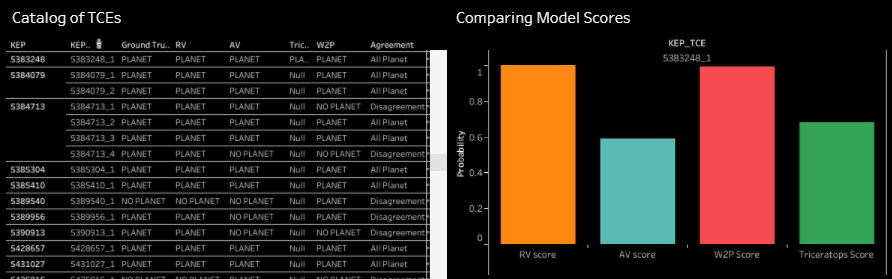

The transit exoplanet discovery methodology involves studying the light curve of a star to identify changes in the brightness observed from earth. When the light from the star dims, it could be an indication of an orbiting planet transiting in between the star and the observer on earth. But how does one distinguish between a planet versus other factors that could impact a star's brightness?
Astronomers and data scientists have developed countless models to help validate threshold crossing events as actual planets. These models use different machine learning algorithms, such as random forest, single decision tree, and convolutional neural networks.
Below we discuss 4 of the most salient models in the field of exoplanet discovery. We introduce our own model. Comparing the results of these models helps facilitate exoplanetary validation, by helping determine how to differentiate between model parameters and star features.
We Catalog over 30,000 objects of interest from the Kepler Space Telescope archive of objects of interest, providing a fast, interactive way to compare model results and view individual light curves.
Autovetter was developed by Mccauliff et al in 2015 and uses a random forest model using a variety of previously processed features from various Kepler pipelines to classify TCEs as planets/no-planets. It was originally trained and developed on approximately 18,000 TCEs (which is what was available at time) (versus the ~34,000 TCEs that have now been cataloged).
Robovetter was developed by Coughlin et al in 2016 and updated by Thompson et al in 2018 on the full Date Release 25 Kepler catalog. It is a single decision tree/flow chart that was originally developed manually (not through a machine learning exercise) and then packaged as an algorithm. Like Autovetter, it utilizes a variety of features that are results of the full Kepler processing pipeline.
The triceratops tool was developed to validate transiting planet candidates from the TESS telescope - as opposed to other validation models that use data from the older Kepler Space Telescope. Like other validation models, a probability of false positive is calculated for each candidate, and a disposition can be inferred from this probability. The newer TESS telescope focuses on the closest and brightest stars, but has lower resolution compared to Kepler. Due to each pixel potentially containing light from more stars, triceratops factors an increased number of stars into its calculations of the probability of false positives compared to older validation models. The developers of the triceratops tool summarize the steps it uses as follows:
1. Calculate the proportion of flux contributed by each star in the aperture to identify the stars that are bright enough to produce the observed transit-like signal.
2. Using the primary transit of the planet candidate and light curve models of transiting planets and eclipsing binaries, determine the size of the transiting object that maximizes the likelihood of each scenario.
3. Given the properties of the host star, the orbital period of the planet candidate, and the best-fit radius of the transiting object, calculate the prior probability of each scenario.
4. Use these likelihoods and priors to calculate the relative posterior probability of each scenario.
The Astronet model classifies potential planet signals using a common type of deep learning algorithm known as a convolutional neural network (CNN). This network trains a model on an existing dataset of TCEs from the Autovetter Planet Candidate Catalog, which produced planet candidate value labels by means of human vetting. Raw light curves from Kepler were downloaded and processed using the following steps:
1. All points corresponding to transits of any other confirmed planets were removed.
2. Low-frequency variability was removed in order to "flatten" the curve, a process that takes a basis spline to the curve and divides it to find best-fit.
These processed light curves were then fed into the neural network, which works by first folding each light curve to show the TCE period and then binning by defining a sequence of uniform intervals of time. Two separate light curves are generated to show differing "views" - a "global view" and a "local view". Finally, these two input vectors are fed into a one-dimensional CNN with max pooling. For each light curve that has both a local and global view, the two vectors are passed through disjointed convolutional columns before they are combined in shared, fully connected layers. The output of each model is the predicted probability that the input is a transiting planet; values close to 1 indicate high confidence that the input is a transiting planet, and values close to 0 indicate high confidence that the input is a false positive.
In order to take a more holistic, comprehensive approach to exoplanet validation, we can compare the outputs of the most salient models, along with the results of our own model. This type of comparison can illuminate which features are being more heavily weighted across the different models. Below is an example of the model comparison. The list on the left shows a number of kepler star systems and the results of the different models: Planet or No Planet. The chart on the right shows the scores of each model for the star Kepler-5383248.
